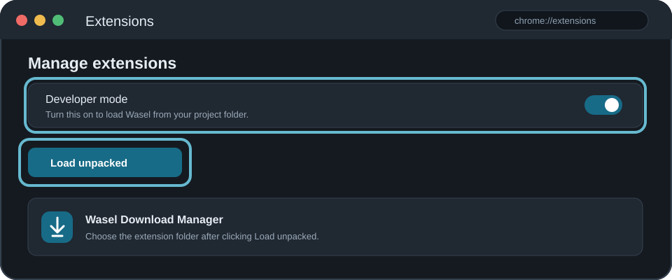
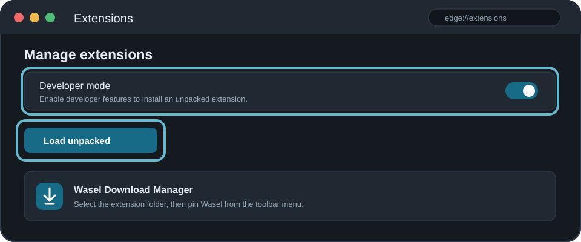
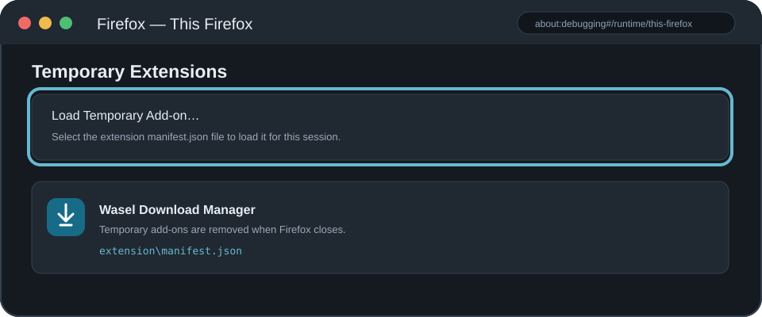

لا توجد تنزيلات لعرضهاأضف رابطًا جديدًا أو اسحب رابط تنزيل إلى هذه النافذة.
إضافة تنزيل جديدتقدم التنزيل
العنوان
الحالة
حجم الملف
تم تنزيل
معدل النقل
الوقت المتبقي
0%
ملف الحفظ
التصنيف
إمكانية الاستئناف
خيارات واصل
الإعدادات العامة والحفظ
مجلد التنزيل
تثبيت إضافة واصل للمتصفح
اتبع الخطوات الخاصة بمتصفحك. الرسوم التوضيحية تبين الأزرار التي ستحتاجها.
إرسال الروابط لا يثبّت برامج في المتصفح؛ تحكّم في التقاط التنزيلات من إعداد الإضافة، ويطلب واصل موافقتك قبل كل تنزيل.

رسم توضيحي لموضع وضع المطوّر وزر تحميل الإضافة في صفحة الإضافات.
ابنِ ملفات الإضافةافتح الطرفية في مجلد المشروع وشغّل:npm run build:ts
افتح صفحة الإضافاتأدخل هذا العنوان في شريط المتصفح:chrome://extensionsينطبق المسار نفسه على Brave عبر brave://extensions.
فعّل وضع المطوّرشغّل زر وضع المطوّر أعلى صفحة الإضافات، ثم اضغط «تحميل إضافة غير محزّمة».
اختر مجلد الإضافةاختر هذا المجلد، وليس ملف manifest منفردًا:extension
ثبّت الإضافة واستخدمهااختياريًا ثبّت أيقونة واصل في شريط الأدوات. افتح صفحة ويب واضغط الأيقونة ثم «إرسال إلى واصل» لإضافة الرابط بعد تأكيدك.
التقاط التنزيلات تلقائيًاافتح نافذة الإضافة وفعّل خيار التحويل إلى واصل؛ عند تنزيل HTTP/HTTPS يلتقط التطبيق الرابط ويطلب تأكيدًا قبل البدء. أوقف الخيار لاستعادة تنزيلات المتصفح.

رسم توضيحي لصفحة Edge Extensions وأزرار التثبيت المحلي.
ابنِ ملفات الإضافةشغّل الأمر التالي من مجلد المشروع مرة واحدة:npm run build:ts
افتح صفحة Edge Extensionsأدخل في شريط العنوان:edge://extensions
فعّل وضع المطوّرفعّل مفتاح Developer mode، ثم اضغط «Load unpacked».
اختر مجلد الإضافةاختر مجلد extension الموجود داخل مشروع واصل:extension
ثبّت الإضافةمن قائمة Extensions ثبّت أيقونة واصل، ثم أرسل رابط الصفحة ووافق على إضافته في التطبيق.
التقاط التنزيلات تلقائيًاافتح نافذة الإضافة وفعّل التحويل إلى واصل لتسليم التنزيلات مباشرةً؛ سيسألك التطبيق قبل أن يبدأ. يمكنك إيقاف الخيار في أي وقت.

رسم توضيحي لتحميل الإضافة مؤقتًا من about:debugging.
ابنِ ملفات الإضافةشغّل هذا الأمر من الطرفية في مجلد المشروع:npm run build:ts
افتح صفحة التصحيحأدخل العنوان التالي في Firefox:about:debugging#/runtime/this-firefox
جهّز إعداد Firefoxاحفظ نسخة Chromium، ثم شغّل الأمر من مجلد extension:Copy-Item manifest.json manifest.chromium.json; Copy-Item manifest.firefox.json manifest.json